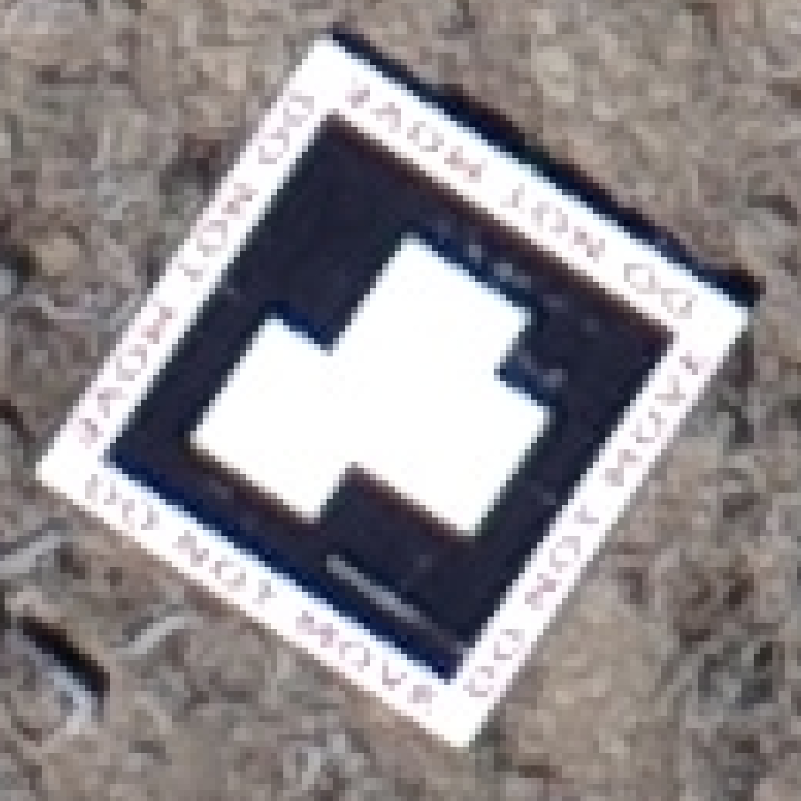
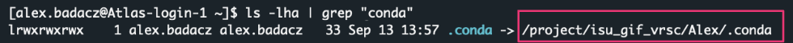
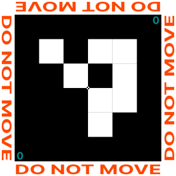
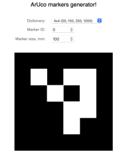

Georeferencing
Georeferencing process results in locating a piece of the landscape visible in the photo in the corresponding geographic destination on the real-world map.

Most software designed for photogrammetric workflows has a built-in geolocation step. The same is true for OpenDroneMap. In any case, to make geospatial localization of [aerial] photos, GPS data (Global Positioning System) is required. Most modern professional cameras record GPS coordinates automatically in the images, usually with an accuracy of 10-30 feet (3-9 meters) [source]. While such a result is sufficient for most ordinary purposes, your research may be more precision demanding. For example, consider the case where the target area is even smaller than the geolocation threshold. The novel, more accurate geolocation systems, such as VPS (Visual Positioning System) or CPS (Camera Positioning Standard), are now being developed [learn more] and will probably supplant GPS technology in the future. By this time, though, the best patch for improving georeferencing process is still to use a high-accuracy GPS point reference, which will minimize the error.
Georeferencing options in OpenDroneMap
The user has some level of control over the ODM settings for the photo georeferencing stage. By default, ODM tries to use the GPS information embedded in the images automatically while recording the mission. If this is the case, you don’t need to add any additional option for geolocation to be performed.
1. Force the use of geolocation from images’ EXIF metadata
--force-gps --use-exif \
Use --force-gps and --use-exif flags when you have a GCP data file in the project file structure but want to force the use of the GPS data stored in the image metadata.
That is especially useful when the original imagery is not geotagged, but you have GPS data in separate text files. In such a case, you can add this information to the image EXIF metadata using ExifTool software. Follow the instructions in the tutorial “Keep EXIF GEO metadata” (section: add EXIF tags from a text file using exiftool) to accomplish this step.
2. Force the use of GPS data (e.g., RTK) from a text file
--geo geo.txt \
Regardless of whether your imagery is geotagged, once you have alternative GPS information stored in a text file, you can force direct use of it with the option --geo geo.txt. This is especially useful when you have more accurate geolocation data such as RTK (Real-Time Kinematic positioning) that corrects some of the common errors in current satellite navigation (GNSS) systems.
Keep in mind that the format of the text file containing the GPS data is strictly defined!
If the geo.txt file is somewhere outside of your project's workdir or you have several GPS files, then provide the absolute path to the one you want.
+proj=utm +zone=11 +ellps=WGS84 +datum=WGS84 +units=m +no_defs # header
DJI_0028.JPG -91.9942096 46.8425252 198.609 # GPS data
DJI_0032.JPG -91.9938293 46.8424584 198.609 # GPS data
- The first line should contain the name of the projection used for the geo-coordinates, in one of the following formats:
* PROJ string: +proj=utm +zone=11 +ellps=WGS84 +datum=WGS84 +units=m +no_defs
* EPSG code: EPSG:4326
* WGS84 UTM: WGS84 UTM 16N
- Subsequent lines are the GPS information for a given image (the first 3 columns are obligatory):
col-1 col-2 col-3 col-4 col-5 col-6 col-7 col-8 col-9 col-10
_____ _____ _____ ______ _________________ ______________ ________________ _______________________ _______________________ ___________
image_name geo_x geo_y [geo_z] [omega (degrees)] [phi (degrees)] [kappa (degrees)] [horz accuracy (meters)] [vert accuracy (meters)] [extras...]
3. Force fixed value of GPS Dilution of Precision (use along with variant 1 or 2)
--gps-accuracy 10.0 \
If you know the estimated error of GPS location determined by the camera in use, consider setting it as a value of the --gps-accuracy value option. The value is a positive float in meters and will be used as a GPS Dilution of Precision for all images. The default is 10 meters.
If you use high-precision GPS (RTK), this value will be set automatically. You can manually set it in case the reconstruction fails. Lowering the value can help control bowling effects over large areas.
3. Force the use of GCP-based georeferencing
Ground Control Points (GCPs) are clearly visible objects which can be easily identified in several images. Using the precise GPS position of these ground points is a good reference that improves significantly the accuracy of the project’s geolocation. Ground control points can be any steady structure existing in the mission area, otherwise can be set using targets placed on the ground. Learn more about recommended practices for GCPs in ODM workflow from the OpenDronMap Documentation: Ground Control Points.
If you have a file with GCPs detected on the image collection, force georeferencing using it by option --gcp gcp_list.txt.
--gcp gcp_list.txt \
Keep in mind that the format of the text file containing the GCP data is strictly defined!
If the gcp_list.txt file is somewhere outside of your project's workdir or you have several GCP files, then provide the absolute path to the one you want.
Detect each ground control point in at least 5-10 photos!
EPSG:4326
-116.74998 43.06477 2090.14 1559.41645 1372.84669 DJI_0177.JPG 100
-116.74998 43.06477 2090.14 1491.01638 2471.85207 DJI_0355.JPG 100
-116.74998 43.06477 2090.14 1524.14196 2214.43593 DJI_0178.JPG 100
-116.74998 43.06477 2090.14 1142.59915 1739.80028 DJI_0152.JPG 100
-116.74998 43.06477 2090.14 1207.88116 1863.28946 DJI_0329.JPG 100
-116.75048 43.06475 2088.22 1737.22646 1763.28507 DJI_0172.JPG 101
-116.75048 43.06475 2088.22 1660.24277 2912.50267 DJI_0350.JPG 101
-116.75048 43.06475 2088.22 1736.70576 1411.55810 DJI_0171.JPG 101
-116.75048 43.06475 2088.22 989.578526 1391.94185 DJI_0157.JPG 101
-116.75048 43.06475 2088.22 877.826253 2459.65369 DJI_0335.JPG 101
- The first line should contain the name of the projection used for the geo-coordinates, in one of the following formats:
* PROJ string: +proj=utm +zone=11 +ellps=WGS84 +datum=WGS84 +units=m +no_defs
* EPSG code: EPSG:4326
* WGS84 UTM: WGS84 UTM 16N
- Subsequent lines are the GPS information for a given image (the first 6 columns are obligatory):
col-1 col-2 col-3 col4 col5 col-6 col-7 col-8 col-9
_____ _____ _____ ____ ____ __________ __________ ________ ________
geo_x geo_y geo_z im_x im_y image_name [gcp_name] [extra1] [extra2]
Software for manual detection of (any) GCPs
Section in development…
Use any software for tagging GCPs, e.g., the GCP Editor Pro is a good match for the ODM. Download source code from the GitHub.
Automatic detection of ArUco targets
ArUco markers are a type of fiducial marker that are often used in computer vision applications. A fiducial marker is an object placed in the field of view of the camera which appears in the image with a known location, size, and appearance. Aruco markers are square black-and-white patterns which can be easily detected, identified, and used to calculate the camera’s pose with respect to the marker.
| ArUco_feature | description |
|---|---|
| Simple Structure | Being just black and white squares, they are relatively easy and efficient to detect in an image. |
| Identification | Each Aruco marker has a unique identifier assigned based on its pattern, which allows the system to distinguish between different markers. |
| Flexibility | Aruco markers come in different dictionaries, or sets of markers. Each dictionary varies in the number of bits in the marker and the number of different markers. This allows for a balance between the total number of unique markers and the robustness against detection errors. |
| Pose Estimation | By knowing the real size of the marker and its position in the image, one can determine the position and orientation (pose) of the camera with respect to the marker. |
| Calibration | ArUco markers can be employed to calibrate cameras by capturing images of the markers from different orientations and positions. |
ArUco markers originated from academic research, and the term "aruco" is derived from the name of the library that introduced and popularized these markers. The ArUco library was initially a standalone project but later got integrated into the OpenCV (Open Source Computer Vision Library). Therefore, when you're looking to utilize ArUco functionalities, you'd typically access it through OpenCV's ArUco module.
Working with ArUco in Land Surveying Tasks
The most official and widely recognized source for information and usage of ArUco markers is within the OpenCV (Open Source Computer Vision Library) library, which has integrated ArUco module functionalities. The OpenCV documentation provides detailed information on how to use ArUco markers, and you can access it via the official OpenCV website.
OpenCV is one of the most popular and comprehensive libraries for computer vision and machine learning tasks. It was initially developed by Intel and released in 2000. Since then, it has become a standard tool for computer vision researchers and developers due to its rich set of functionalities and performance optimizations.
- OpenCV is organized into modules, each focused on a specific aspect of computer vision or image processing. This includes modules for:
- image filtering with
imgprocmodule - pose estimation with
arucomodule - feature detection with
features2dmodule - object detection with
objdetectmodule - machine learning with
mlmodule - camera calibration with
calib3dmodule - motion analysis with
videomodule - and more.
- image filtering with
- While OpenCV was originally written in
C++, it now has bindings forPython,Java, and several other languages. This makes it accessible to a wide range of developers. The Python bindings have become extremely popular enabling developers to create custom computer vision applications, such as Find-GCP utility for finding ArUco markers in digital photos.
Learn more about ArUco markers in OpenCV library: https://docs.opencv.org/3.2.0/d5/dae/tutorial_aruco_detection.html
Steps in the land surveying
1. Markers Generation: Before the survey, ArUco markers are generated using specialized software or libraries, such as the aruco_make.py python utility (using ArUco module in OpenCV library).
You can generate GCP (Ground Control Point) markers ranging from 1 to up to 1000 using various ArUco dictionaries by leveraging OpenCV's built-in ArUco module. To learn more, see section Automatic generation of ArUco codes .
2. Printing and Placement: Once generated, these markers are printed on sturdy material to withstand outdoor conditions. They’re then placed strategically at known positions within the area to be surveyed.
When recording the exact positions of the placed Ground Control Points (GCPs), always note which GCP corresponds to which ArUco marker ID (e.g., create GCP_reference.txt file); this association will be crucial when pinpointing them on the images during post-processing.
Expected format of the GCP_reference.txt is 4-columns: ArUco_ID x y z
0 523287.368 4779588.335 1397.823
1 523305.976 4779572.588 1397.817
2 523347.074 4779571.424 1397.653
3 523364.648 4779587.932 1395.735
4 523394.376 4779529.525 1398.728
5 523363.938 4779530.027 1400.244
When using ArUco markers for Ground Control Points (GCPs), it's strongly recommended to avoid using custom IDs. If custom IDs are unavoidable, make sure to maintain an accurate reference that matches your custom IDs with the corresponding ArUco marker ID or type (i.e., marker's pattern).
| WARNING: | digital marker: ID 9 | printed marker |
|---|---|---|
| Always verify that the printed marker matches the digital version. Printing errors can occasionally distort the marker, leading to recognition issues during post-processing of land surveying imagery. In the given example, the printed marker is missing one black square. This omission can greatly hinder its recognition, making it challenging to correctly identify it as an ArUco marker with ID 9. |
 |
3. Capturing Imagery: Using drones, satellites, or handheld cameras, images of the area are taken. These images capture the terrain as well as the ArUco markers.
4. Detection and Analysis: During the post-processing phase, software detects the ArUco markers in the captured images. Given the known size and ID of each marker, as well as its location in the image, software can estimate the camera’s pose and the 3D position of the marker.
To learn more, see section Automatic recognition of ArUco codes.
5. Georeferencing: Knowing the real-world coordinates of each ArUco marker, the captured images can be georeferenced (assigned to a specific location in a spatial reference system). This ensures that the imagery aligns accurately with geographic coordinates.
Create env for geospatial analysis
Creating a Conda environment for geospatial analyses streamlines your workflow by isolating installations and dependencies specific to selected geospatial tools. This offers the advantage of consistency, compatibility and convenience, beneficial for both High-Performance Computing (HPC) and local machines.
Isolating installations and dependencies ensures that you can effortlessly integrate ready-made packages and Python utilities, such as those for marker detection in imagery for further analysis with ODM. With a one-time setup of a unified “geospatial” environment, you can seamlessly utilize a suite of tools from various GitHub repositories, significantly streamlining your daily tasks.
Give it a shot! It’s an investment that pays off!
A. On SCINet HPC: Atlas
(via ssh in CLI terminal or via OOD in JupyterLab Terminal app)
1. check available conda modules and load selected one:
module avail conda
module load miniconda/4.12.0

2. create python environment for geospatial analysis:
conda create -n geospatial python=3.9

3. activate this environment:
source activate geospatial

4. install required libraries:
pip install numpy==1.22.2 opencv-python==4.8.0.76 opencv-contrib-python==4.8.0.76 Pillow==10.0.0 pyproj==3.6.0 Shapely==1.8.1.post1 svgwrite==1.4.1 matplotlib pandas
This command installs a foundational set of dependencies crucial for the Python utilities detailed below (sourced from GitHub repos). With these dependencies in place and the environment activated, these tools are set to operate immediately post-cloning, eliminating the need of further setup.
In the future, if you seek to augment this environment with more packages, you can effortlessly do so at any point using either conda install or pip install commands in the activated environment.
5. deactivate this environment (if you no longer intend to use it for this session):
conda deactivate
Before starting to use Conda on HPC cluster (e.g. Atlas or Ceres), it’s advisable to change the default location (your home directory) where Conda will install your customized libraries. Installing a lot of Python libraries may contribute to the default 5G soft limit quota on your home directory being surpassed. To overcome this issue you can move .conda directory from your home directory to your project directory and create a symbolic link to the new location.
6.* Change storage location of your Conda envs:
( Do it only once! All your Conda envs are stored in .conda dir by default. )
Remember to replace the placeholders in <> with the appropriate paths from your file system.
cd ~
mkdir /project/<your_project_dir>/<account_name>
mv .conda /project/<your_project_dir>/<account_name>/
chmod -R g+s /project/<your_project_dir>/<account_name>/.conda
ln -s /project/<your_project_dir>/<account_name>/.conda .conda
The mv command may take longer time depending on how much data you have in the .conda directory.

If you're unsure whether you've moved your .conda directory from home to the project, run ls -lha in your home directory to see the actual locations of all files, including the (eventually) soft-linked .conda.

7.* Create the storage directory for custom software and GitHub repos:
( Do it only once! You can keep all your self-installed useful tools here. )
You can establish a SOFTWARE or TOOLS directory within your /project/<account> location on the cluster, ensuring a well-organized repository for your custom tools, making them easily locatable in the future.
cd /project/<your_project_dir>/
mkdir SOFTWARE

We will use this location later in this tutorial to git clone a few GitHub repositories with python utilities useful in land surveying tasks. You can also add your customized software here.
B. On your local machine (alternatively):
- If you already have the Conda environment manager installed, skip step 1 and proceed with the instructions outlined above.
- NOTE: On a local machine you will use
conda activate geospatialinstead ofsourcecommand.
- NOTE: On a local machine you will use
-
For those unfamiliar with Conda, it’s a valuable tool for computational tasks, and you can learn how to use it through the practical tutorials in the DataScience workbook: Conda on Linux, Conda on macOS, Python Setup on your computing machine.
- If you choose not to use Conda, you can jump directly to step 4 in the guide, though this is not recommended because the necessary libraries will install system-wide, rather than in an isolated environment.
A few tips before working with Conda and GitHub repos
Once you’ve set up the geospatial environment, theoretically all the necessary dependencies for the repos listed below should already be installed. However, dependencies may change over time.
- If there are updates or changes to the repository, ensure that you activate the geospatial environment and install all the new requirements. The installation should be done once initially, or after each
git pull(updates) from the repo. - For subsequent usage of the repo’s scripts, simply activate the geospatial environment and execute the scripts; there’s no need to reinstall requirements every time you use them.
geo_utils python utility: installation
geo_utils (GitHub repo) is an evolving collection of Python utilities tailored for geospatial analysis, developed at ISU as a part of the virtual research support for the USDA scientist. These utilities are designed to complement photogrammetry analysis using ODM software, enhancing the robustness of processing pipelines especially when calculations are executed on an HPC cluster. The GitHub repo contains a few small utilities useful in land surveying tasks:
-
gcp_to_aruco_mapper.py - maps custom GCP IDs to corresponding ArUco marker IDs in imagery based on the distance between GCP coordinates and image GPS
-
gcp_images_picker.py - automatically selects the representative images for each GCP, minimizing manual inspection
INSTALLATION: ( Do it only once! The cloned repo will persist in your file system.)
On SCINet HPC: Atlas (via ssh in CLI terminal or via OOD in JupyterLab Terminal app)
- navigate to the SOFTWARE directory in your
/project/<your_project_dir>/path:cd /project/<your_project_dir>/SOFTWARE - clone the
geo_utilsrepo from GitHub:git clone https://github.com/ISUgenomics/geo_utilsWhen you clone a repository from GitHub, it creates a new directory on your current path with the name of the repository. Inside this directory, you’ll find the contents of the repository.

- check available conda modules and load selected one (if not loaded yet in this session):
module avail conda module load miniconda/4.12.0 - activate your
geospatialenvironment (if not activated yet in this session):source activate geospatial - *install required libraries (optionally after
git pull):cd geo_utils pip install -r requirements.txt - start using the scripts from the repo! (they are located in the TOOLS subdir)
# GCP images picker python gcp_images_picker.py [-h] -i DATA_FILE_PATH -w IMAGE_WIDTH -l IMAGE_HEIGHT [-n IMAGES_NUMBER] [-o OUTPUT] # GCP to ArUco mapper python gcp_to_aruco_mapper.py [-h] -g GCP_FILE -i IMAGERY_PATH -z ZONE [-o OUTPUT] [-d MAX_DIST]
To gain practical experience with the use of these scripts, please follow the instructions provided in the subsequent sections of this tutorial.
Find-GCP python utility: installation
Find-GCP (GitHub repo) is a Python tool leveraging the OpenCV library, designed to detect ArUco Ground Control Points in imagery and generate the corresponding GCP file required for photogrammetric programs such as Open Drone Map. The GitHub repo contains a few small utilities useful in land surveying tasks:
- aruco_make.py - generates aruco marker images using different standard dictionaries
- gcp_find.py - identifies Ground Control Points (GCP) in imagery
- gcp_check.py - helps the visual check of the found GCPs by
gcp_find.py
INSTALLATION: ( Do it only once! The cloned repo will persist in your file system.)
On SCINet HPC: Atlas (via ssh in CLI terminal or via OOD in JupyterLab Terminal app)
- navigate to the SOFTWARE directory in your
/project/<your_project_dir>/path:cd /project/<your_project_dir>/SOFTWARE - clone the
Find-GCPrepo from GitHub:git clone https://github.com/zsiki/Find-GCP.git
- check available conda modules and load selected one (if not loaded yet in this session):
module avail conda module load miniconda/4.12.0 - activate your
geospatialenvironment (if not activated yet in this session):source activate geospatial - *install required libraries (optionally after
git pull):pip install opencv-python opencv-contrib-python Pillow pil.imagetk numpy matplotlib
Installing packages without specifying a version usually installs the latest version, which may be incompatible with older required ones, potentially causing scripts to malfunction.
6. start using the scripts from the repo! (they are placed directly in the directory)
Once you navigate into the newly created Find-GCP directory, you should see 6 files with the .py extension. These .py files are the Find-GCP python utilities for working with ArUco markers in Land Surveying Tasks.
cd Find-GCP
ls
python gcp_find.py -h


Automatic generation of ArUco codes
ArUco markers provide known reference points in the imagery, enhancing the accuracy of photogrammetric analysis. This ensures that data derived from the imagery correctly corresponds to actual locations on the ground.
Available ArUco dictionaries
ArUco markers come in various dictionaries that defines a set of distinct markers. The choice of dictionary affects the size and resilience of the markers, as well as how many unique markers the dictionary contains.
In the naming convention like DICT_4X4_100 or DICT_6X6_250:
- The first part (4X4 or 6X6) represents the size of the marker grid. For example, a 4X4 marker has a 4x4 grid of black or white squares, while a 6X6 marker has a 6x6 grid.
- The second part (100 or 250) indicates the number of unique markers available in that dictionary. So, DICT_4X4_100 has 100 unique 4x4 markers, while DICT_6X6_250 contains 250 unique 6x6 markers.
When choosing a dictionary, one must consider the application.

ArUco markers within each dictionary are numbered starting from zero. For accurate reference and data processing, always save both the selected marker's ID and the type of the source dictionary used.
Generating markers using ready-made tools
A. ArUco marker images in PNG
To produce ArUco markers for your land surveying project, start by installing the Find-GCP Python utility (refer to the section above). Within the cloned Find-GCP repository directory, you’ll locate the aruco_make.py. This tool assists you in generating markers from standard dictionaries, as well as more compact 3x3 square markers.
-
While in the Find-GCP directory, use
pwdcommand to print the path on the screen. You will need this path to run python scripts from another location in the file system.
- Navigate to the selected location in the file system and create the markers directory:
cd /project/<your_project_dir>/<user_account>/geospatial mkdir markers cd markers
- Then use the
aruco_make.pyscript like this:
python aruco_make.py -d <DICT> -s <START> -e <END> -v, for example:source activate geospatial # activate environment (if not activated yet) python path_to_Find-GCP_dir/aruco_make.py -d 1 -s 0 -e 9 -v conda deactivate # deactivate env when you are done with Find-GCP tasks
This command will create 10 markers, numbered from 0 to 9 (e.g., marker0.png), using the dictionary DICT_4x4_100.
-d <int>option, the number determines the dictionary (see the table below), default = 1
code dictionary code dictionary code dictionary code dictionary 0 DICT_4X4_50 1 DICT_4X4_100 2 DICT_4X4_250 3 DICT_4X4_1000 4 DICT_5X5_50 5 DICT_5X5_100 6 DICT_5X5_250 7 DICT_5X5_1000 8 DICT_6X6_50 9 DICT_6X6_100 10 DICT_6X6_250 11 DICT_6X6_1000 12 DICT_7X7_50 13 DICT_7X7_100 14 DICT_7X7_250 15 DICT_7X7_1000 16 DICT_ARUCO_ORIGINAL 17 DICT_APRILTAG_16H5 18 DICT_APRILTAG_25H9 19 DICT_APRILTAG_36H10 20 DICT_APRILTAG_36H11 99 DICT_3X3_32 custom -s <int>option, the number determines the index of the first marker, default = 0-e <int>option, the number determines the index of the last marker, default = -1
(only one marker is generated with index 0)-vflag (optional) shows marker on monitor
(when applicable, e.g., when working on a local machine)-gflag (optional) generates black/gray marker
(instead black/white to reduce the effect of white burnt in)- the optional
--value <VAL>determines shade of background
(use with-g, default=95)
- the optional
-p <PAD>(optional) determines border width around marker in inches, default= 0.5
B. ArUco marker images in SVG
There is another GitHub repo, gcp_aruco_generator, providing a simple python tool for generating ArUco markers with a real sizing of the image saved in SVG format. It also has a few more options, including --print-id in the corner of the marker and adding a watermark on the four borders. Follow the Setup and use guide to get started with this tool.
|
PRO TIP: For good size recommendations, please see http://www.agt.bme.hu/on_line/gsd_calc/gsd_calc.html. The generated ArUco markers are compatible with the Find-GCP tool, so you can use it after the flight to find the markers in your pictures.
WARNING:
When using the gcp_aruco_generator tool, be aware that the ArUco marker IDs also start numbering from 0, just like in standard ArUco dictionaries. |
 |
If you're using gcp_aruco_generator to create ArUco codes for detection with the Find_GCP tool, avoid using codes with IDs 9, 12, and 19, as they are missing the central black square compared to the reference codes from the OpenCV library and will not be detectable. Check the repository's issue tracker (issue #3) to see if the developers have addressed this concern.
- generate a single marker from selected dictionary in size = 1000 mm (without margins):
python path/marker_generator.py -b -d 4X4_50 -s 1000 --id 0 --print-id - generate 10 hand selected markers:
for i in 0 5 10 15 20 21 22 23 24 25 do python path/marker_generator.py -b -d 4X4_50 -s 1000 --id $i --print-id done
- generate 10 consecutive markers with IDs in selected range:
for i in `seq 0 9` do python path/marker_generator.py -b -d 4X4_50 -s 1000 --id $i --print-id done
C. ArUco marker images generated online (SVG or PDF)
|
Finally, you can use the free online ArUco markers generator: https://chev.me/arucogen/ See the corresponding GitHub repo: https://github.com/okalachev/arucogen Save this marker as SVG, or open standard browser's print dialog to print or get the PDF. |
 |
Automatic recognition of ArUco codes
For automatic recognition of ArUco markers, it’s optimal to have your land surveying imagery in the JPG format. It’s presumed that you’ve utilized printed ArUco markers as your Ground Control Points and have diligently recorded GCPs precise positions. This data should be saved in a text file, for instance, GCP_reference.txt. This file should feature four columns: aruco_id, x, y, and z, representing the marker ID and its three-dimensional coordinates respectively.
INPUTS:
- imagery in JPG format
- GCPs coordinate file, e.g., GCP_reference.txt:
0 523287.368 4779588.335 1397.823
1 523394.376 4779529.525 1398.728
2 523350.181 4779492.395 1403.140
3 523363.938 4779530.027 1400.244
4 523364.648 4779587.932 1395.735
5 523329.480 4779525.642 1400.983
6 523347.074 4779571.424 1397.653
If your GCPs coordinate file uses custom IDs (e.g., 131, 135, 143 when you used 4X4_50 ArUco dictionary), ensure you replace these with the appropriate ArUco marker IDs from the relevant dictionary before proceeding with automatic recognition of ArUco codes in your imagery.
If you're unable to match your custom IDs with the corresponding ArUco marker IDs, you can still detect the markers in your imagery, but you won't be able to directly align them with the precise positions in your GCP coordinates file.
If you encounter this issue, you may follow one of the two scenarios:
- For simply identifying individual markers on your imagery and obtaining a list of images categorized by the detected markers, refer to section SCENARIO 3: no GCP file.
- However, if your markers were placed at a sufficient distance apart, there's a good chance you can programmatically match the GCPs coordinates to the markers using the GPS coordinates embedded in the representative images (I prepared a ready-made Python script for this task). To detect markers on imagery and subsequently assign them precise GCP coordinates, follow the guide in section SCENARIO 2: GCP file with custom IDs. Note: Approach the results with caution, recognizing that the precision of such a method may be limited.
SCENARIO 1: GCP file with known ArUco IDs
i.e., Direct ArUco ID match
This approach is for those possessing a GCP file with recognized ArUco IDs:
- by inputting your imagery and the
GCP_reference.txtfile along with the known ArUco dictionary, - you’ll receive an output in the form of
gcp_list.txt. This file provides precise world coordinates for the GCPs as well as coordinates on the corresponding images.- This output file is ready for immediate use with OpenDroneMap (ODM) software.
- Login to the Atlas cluster using SSH protocol (command line) or OOD access (web-based).
- Navigate to your ODM working directory. Use the command below:
cd /project/<path_to_your_project_directory>/ODM PRO TIP: If you haven’t set up the ODM directory structure yet, please follow the guide provided in section Create File Structure in the tutorial Command-line ODM modules.
PRO TIP: If you haven’t set up the ODM directory structure yet, please follow the guide provided in section Create File Structure in the tutorial Command-line ODM modules.
Create a subdirectory for your new project in the IMAGES directory and create soft links for your imagery and (eventually) theGCP_reference.txtfile:cd IMAGES mkdir project-X cd project-X ln -s <source_path_to_imagery>/* ./ ls | head -10 pwd # copy this path in the next step as the INPUTS_PATH variable
If your GCP reference file (here: gcp_epsg32611_2021_wbs1_coresite.csv) has format different than space-separated 4 columns: aruco_ID X Y Z, then you should adjust it accordingly to get something like this:0 523287.368 4779588.335 1397.823 1 523394.376 4779529.525 1398.728 2 523350.181 4779492.395 1403.140 3 523363.938 4779530.027 1400.244 4 523364.648 4779587.932 1395.735 5 523329.480 4779525.642 1400.983 6 523347.074 4779571.424 1397.653You can use
awkcommand to easily extract the columns you need. Note that GCP_reference.txt file should not have a header.
- Set paths as temporary variables or use them directly:
FIND_GCP_PATH=/path/to/Find-GCP_repo INPUTS_PATH=/path/to/input_imageryIn my case the path variables look like this:

- Activate the Conda environment (if not activated yet). You should activate a specific conda environment related to this project (e.g., the geospatial env created in section
Find-GCP python utility: installation):source activate geospatial - Run the
gcp_find.pyPython tool:python $FIND_GCP_PATH/gcp_find.py -v -t ODM -i $INPUTS_PATH/GCP_reference.txt --epsg <code> -d <int> -o gcp_list.txt $INPUTS_PATH/*.JPGReplace <code> with the EPSG of your GCP coordinate system and <int> with an ID corresponding to the used ArUco dictionary. For example:
python $FIND_GCP_PATH/gcp_find.py -v -t ODM -i $INPUTS_PATH/GCP_reference.txt --epsg 32611 -d 0 -o gcp_list.txt $INPUTS_PATH/*.JPG
Explore all options
[-s SEPARATOR] [-v] [--debug | --multi] [-l] [--epsg EPSG]
[-a] [--markersize MARKERSIZE] [--markerstyle MARKERSTYLE]
[--markerstyle1 MARKERSTYLE1] [--edgecolor EDGECOLOR]
[--edgewidth EDGEWIDTH] [--fontsize FONTSIZE]
[--fontcolor FONTCOLOR] [--fontcolor1 FONTCOLOR1]
[--fontweight FONTWEIGHT] [--fontweight1 FONTWEIGHT1]
[--limit LIMIT] [--nez] [-r] [--winmin WINMIN]
[--winmax WINMAX] [--winstep WINSTEP] [--thres THRES]
[--minrate MINRATE] [--maxrate MAXRATE] [--poly POLY]
[--corner CORNER] [--markerdist MARKERDIST]
[--borderdist BORDERDIST] [--borderbits BORDERBITS]
[--otsu OTSU] [--persp PERSP] [--ignore IGNORE]
[--error ERROR] [--correct CORRECT]
[--refinement REFINEMENT] [--refwin REFWIN]
[--maxiter MAXITER] [--minacc MINACC]
[file_names [file_names ...]]
positional arguments:
file_names image files to process
optional arguments (common):
| flag | values | default | description | notes |
|---|---|---|---|---|
| -h --help | show this help message and exit | |||
| -d DICT --dict DICT | integer | 1 | marker dictionary ID, default=1 (DICT_4X4_100) | ID determines which set of markers the program will recognize. Ensure you match this with the markers you're using. |
| -l --list | output dictionary names and ids and exit | This is a quick way to view available dictionaries. It's useful if you're unsure which dictionary ID to use. | ||
| -o FILE --output FILE | filename | stdout | name of output GCP list file, default stdout | If no output file name is specified, the results will be printed directly to the terminal (stdout). |
| -t {ODM,VisualSfM} --type {ODM,VisualSfM} | ODM, VisualSfM | target program ODM or VisualSfM, default | Make sure to select the target program that aligns with your project needs. Both ODM (OpenDroneMap) and VisualSfM have different formats. | |
| -i GCP_FILE --input GCP_FILE | 4-col file | name of input GCP coordinate file, default None | If not provided, the tool won't assign the reference coordinates to detected markers. | |
| --epsg EPSG | epsg code for gcp coordinates, default None | Ensure the EPSG code matches the coordinate system of your GCPs. This ensures that coordinates are interpreted correctly. | ||
| -s SEPARATOR --separator SEP | ' ' , | space | input file separator | If you notice issues with reading your input file, double-check that the specified separator matches the one used in your file. |
| -v --verbose | off | verbose output to stdout | Use this option if you want detailed logs during processing. It can help with troubleshooting. | |
| --debug | off | show detected markers on image | This is particularly helpful for visual verification. When activated, you'll get images showing where markers were detected. Works on a local machine or with X11 forwarding. | |
| --multi | off | process images paralel | Use this for faster processing if you're working with multiple images, as it processes them in parallel. | |
| -r, --inverted | off | detect inverted markers | This ensures the tool will recognize markers even if they're inverted, increasing the robustness of your detection process. |
optional arguments (more customization):
Additional customization options ⤴ allow users to adjust color schemes, define marker styles and attributes, set font characteristics for debug images, limit record output, reorder coordinates, detect inverted markers, fine-tune adaptive thresholding, specify marker characteristics, determine marker-border relations, and refine marker detection through various parameters such as accuracy, error rates, and iteration limits.
523287.368 4779588.335 1397.823 5041 91 R0036021.JPG 0
523287.368 4779588.335 1397.823 5190 1110 R0036023.JPG 0
523287.368 4779588.335 1397.823 5462 1856 R0036024.JPG 0
523287.368 4779588.335 1397.823 5680 2998 R0036026.JPG 0
523364.648 4779587.932 1395.735 3170 60 R0036061.JPG 4
523347.074 4779571.424 1397.653 624 700 R0036065.JPG 6
523347.074 4779571.424 1397.653 539 1349 R0036066.JPG 6
523305.976 4779572.588 1397.817 162 701 R0036073.JPG 10
523305.976 4779572.588 1397.817 87 1597 R0036074.JPG 10
523364.648 4779587.932 1395.735 4892 3940 R0036042.JPG 4
You can further refine the output file by sorting the records based on the ArUco marker ID, allowing you to choose a subset of 5-10 images for each marker, required by the ODM software. While manually reviewing the images is the most reliable approach to select the best representations, you can initially narrow down the number of images per marker programmatically. After this automatic reduction, a visual review is recommended to address any ambiguous images.
Select representative images for a marker
Optimally, a marker should be positioned near the center of the image. The marker’s position in an image can be approximated using its target coordinates, which are located in the 4th and 5th columns of the output file, i.e., gcp_list.txt.
In some cases, you might find that a given marker is detected in several dozens to even hundreds of images.
awk '{print $7}' < gcp_list.txt | sort | uniq -c
The 7th column stores the ArUco marker ID. You can easily count the number of images matched with a given ID. In my case, the result is like this (counts, ID):
30 0
40 1
40 2
20 3
23 4
37 5
24 6
25 7
37 8
33 10
28 11
A practical strategy is to first employ an automated filter to narrow down to approximately 10 images per marker, and subsequently perform a visual check to ensure accuracy.
- To select the N=10 images per marker ID where the marker is placed closest to the center of the image, we can use a Python script
gcp_images_picker.py. Here’s the outline of the steps:- Calculate the distance of each marker from the center of the image using the Euclidean distance formula.
- Sort the images for each marker ID based on this distance in ascending order.
- Select the top N images for each marker ID.
- Make sure you have your local copy of the geo_utils GitHub repository, placed in your SOFTWARE or TOOLS directory on Atlas (e.g.,
project/<account>/<user>/SOFTWARE). (You can follow the instructions in section geo_utils Python utility: installation to download this repository.) We will use the Python scriptgcp_images_picker.pylocated in the TOOLS subdir of this repo:ls /project/<your_project_dir>/<user_account>/SOFTWARE - Make sure you navigate back to the IMAGES directory in your photogrammetry project. You can softlink the
gcp_images_picker.pyscript for easy use:cd project/<your_project_dir>/<user_account>/ODM/IMAGES/<project-X> ln -s /project/<your_project_dir>/<user_account>/SOFTWARE/geo_utils/TOOLS/gcp_images_picker.py ./ - Run the
gcp_images_picker.pyscript to automate selection of representative GCP images, minimizing manual inspection:# Usage: python gcp_images_picker.py -i <data_file_path> -w <image_width> -l <image_height> -n <images_number> -o <custom_outfile>for example:
python gcp_images_picker.py -i gcp_list.txt -w 6000 -l 4000 -n 10The script will write the selected data to the file specified by the -o option. If the option isn’t provided, it defaults to
gcp_list_selected.txt.523394.376 4779529.525 1398.728 3420 1497 R0036704.JPG 4 523394.376 4779529.525 1398.728 2236 1940 R0036753.JPG 4 523394.376 4779529.525 1398.728 2329 1549 R0036752.JPG 4 523394.376 4779529.525 1398.728 3526 1127 R0036703.JPG 4 523394.376 4779529.525 1398.728 3924 1274 R0036038.JPG 4 523394.376 4779529.525 1398.728 4216 1930 R0036039.JPG 4 523394.376 4779529.525 1398.728 4372 2125 R0036678.JPG 4 523394.376 4779529.525 1398.728 4302 1536 R0036677.JPG 4 523394.376 4779529.525 1398.728 4364 2421 R0036040.JPG 4 523394.376 4779529.525 1398.728 4216 1199 R0036676.JPG 4
While the script does a job of pre-selecting images, it's recommended taking a moment to visually inspect the chosen images. This ensures that markers are clearly visible and that the annotations with ArUco ID align with the correct pattern. A brief manual check can help enhance the accuracy and reliability of your dataset.
Automation aids efficiency, but a human touch ensures precision!
Visual check of representative images for a marker
Ensuring that selected images are truly representative for each Ground Control Point (GCP) is a crucial step for accurate georeferencing. The gcp_check.py tool (from Find-GCP repo) offers a user-friendly graphical interface to facilitate the visual check of GCPs detected by gcp_find.py.
Proceeding with this section requires the use of Secure SHell (SSH) paired with X11 forwarding. X11 forwarding enables graphical applications run on the cluster to manifest visually on your local machine.
When connecting via SSH, use the -X (or -Y, which is less secure but more permissive) option to enable X11 forwarding.
(For me, the -Y variant worked. Note it may be slow!)
ssh -Y user.name@atlas-login.hpc.msstate.edu
Using Atlas Open OnDemand (OOD) ⤴ (in-browser access) can offer a more responsive experience compared to traditional SSH with X11 forwarding, especially over slower connections.
If the cluster doesn't permit the use of X11 forwarding and OOD also didn't work for you, you'll need to take a detour:
1. Download the relevant images (only those from gcp_list.txt) to your local machine.
2. Clone the Find-GCP repository again but this time on your local setup.
3. Then continue with the subsequent steps of this section.
*Be sure to modify the paths to align with your local filesystem during this process.
If you’ve followed this tutorial, you should have already cloned the Find-GCP repository (see section Find-GCP Python utility: installation). As a result, the gcp_check.py utility would be included within your cloned repo, ready for use.
Check your SOFTWARE path on the Atlas cluster (for reference, see step 7 “Create the storage directory for custom software and GitHub repos” in section Create env for geospatial analysis):
ls /project/<your_project_dir>/SOFTWARE
If you have the Find-GCP repo cloned already:
- set up its path as a local variable (remember to adjuct the path):
FIND_GCP_PATH=/project/<your_project_dir>/SOFTWARE/Find-GCP - activate your
geospatialConda environment (if not activated yet) or follow the guide provided in section reate env for geospatial analysis to make up for this step.source activate geospatial
INPUTS:
project-Xdirectory with the complete imagerygcp_list_selected.txtfile (The (filtered) output file of thegcp_find.pyis the input file of this program.)
EPSG:32611
523287.368 4779588.335 1397.823 5041 91 R0036021.JPG 0
523287.368 4779588.335 1397.823 5190 1110 R0036023.JPG 0
523287.368 4779588.335 1397.823 5462 1856 R0036024.JPG 0
523287.368 4779588.335 1397.823 5680 2998 R0036026.JPG 0
523364.648 4779587.932 1395.735 3611 96 R0036036.JPG 4
523364.648 4779587.932 1395.735 3714 535 R0036037.JPG 4
523364.648 4779587.932 1395.735 3924 1274 R0036038.JPG 4
523364.648 4779587.932 1395.735 4216 1930 R0036039.JPG 4
Please be cautious: the script gcp_check.py can NOT be executed within the directory containing the input images. Instead, navigate one level up in the directory structure before running it.
Let’s assume you store your gcp_list.txt file along with your imagery at the IMAGES/<project-X> path. If so, navigate one level up:
cd /project/<your_project_dir>/<user_account>/ODM/IMAGES
Now, you can launch the gcp_check.py GUI by executing this command in the terminal:
python FIND_GCP_PATH/gcp_check.py --path ./<project-X>/ --edgewidth 5 --fontsize 300 ./<project-X>/gcp_list_selected.txt
To modify how detected markers are highlighted, explore the command-line parameters outlined in the official documentation.
After executing the command, a window showcasing the GUI will appear. Within this interface, you can use:
- forward and backward buttons (on the top) to navigate between images
- the mouse wheel to zoom in or out
- the left mouse button to pan across the image

The tool is designed to automatically identify markers within images. Once detected, it highlights these markers with a circle and displays the corresponding ArUco ID. This setup aids in easy visual verification, ensuring that markers are correctly recognized and labeled.
SCENARIO 2: GCP file with custom IDs
i.e., Custom ID integration
For cases where you have a GCP file with custom IDs, your inputs will be the imagery, a GCP_reference.txt file with custom marker IDs, a known ArUco dictionary, and the EPSG code for the registered GCPs.
EPSG: 32611
# GCP_reference.txt
131 523287.368 4779588.335 1397.823
135 523305.976 4779572.588 1397.817
137 523347.074 4779571.424 1397.653
141 523364.648 4779587.932 1395.735
134 523394.376 4779529.525 1398.728
133 523363.938 4779530.027 1400.244
138 523329.480 4779525.642 1400.983
136 523350.181 4779492.395 1403.140
132 523289.018 4779469.252 1407.142
139 523292.432 4779530.710 1401.051
143 523261.422 4779532.114 1401.978
STEP 0. Prepare your working space.
- Login to the Atlas cluster using SSH protocol (command line) or OOD access (web-based).
- Navigate to your project working directory. Use the command below:
cd /project/<path_to_your_project_directory>/ODM
PRO TIP: If you haven’t set up the ODM directory structure yet, please follow the guide provided in section Create File Structure in the tutorial Command-line ODM modules.
Create a subdirectory for your new project in the IMAGES directory and create soft links for your imagery and (eventually) theGCP_reference.txtfile:cd IMAGES mkdir project-X cd project-X ln -s <source_path_to_imagery>/* ./ ls | head -10 pwd # copy this path in the next step as the INPUTS_PATH variable - Set paths as temporary variables or use them directly:
FIND_GCP_PATH=/path/to/Find-GCP_repo INPUTS_PATH=/path/to/input_imageryIn my case the path variables look like this:
- Activate the Conda environment (if not activated yet). You should activate a specific conda environment related to this project (e.g., the geospatial env created in section Find-GCP python utility: installation):
source activate geospatial
STEP 1. The first step involves identifying the ArUco IDs of markers detected on the imagery and selecting a representative image for each. Ideally, this image should predominantly feature the marker centrally placed.
- Run the
gcp_find.pyPython tool with basic settings to detect ArUco markers:python $FIND_GCP_PATH/gcp_find.py -d 0 $INPUTS_PATH/*.JPG >> markers_detected.txtRemember to use the correct ArUco dictionary with the -d option (for example, in this case, the -d 0 denotes the DICT_4x4_50 dictionary).
The outputmarkers_detected.txtshould looks like this (columns:xyimagearuco_id):5041 91 R0036021.JPG 0 5190 1110 R0036023.JPG 0 5462 1856 R0036024.JPG 0 5680 2998 R0036026.JPG 0 3170 60 R0036061.JPG 4 624 700 R0036065.JPG 6 539 1349 R0036066.JPG 6 162 701 R0036073.JPG 10Let’s filter the output to include only the images with a single detected marker on them.
awk '{print $3}' markers_detected.txt | sort | uniq -c | awk '$1 == 1 {print $2}' | while read image; do grep "$image" markers_detected.txt; done > single_markers.txtThe
single_markers.txthas the same data structure but contains filtered records. - Extract unique ArUco marker IDs from the 4th column:
awk '{print $4}' < markers_detected.txt | sort -n | uniq > marker_idsThe
marker_idsfile contains unique marker IDs stored in a column. - For each marker ID, select representative image, i.e., the image where the marker is placed closest to the center:
for i in `cat marker_ids`; do awk -v A=$i '{if ($4==A) print $0}' < single_markers.txt | awk 'BEGIN {min_dist = 1000000000} {dist = sqrt(($1-3000)^2 + ($2-2000)^2); if(dist < min_dist) {min_dist = dist; closest = $0}} END {print closest}' >> representatives; doneThis assumes that the image dimensions are 6000x4000 px, so the coordinates of the center of the picture are (x = 6000/2 = 3000, y = 4000/2 = 2000). Remember to adjust the command for your values.
The outputrepresentativesshould contain the representative image for each marker ID:
(with marker’s XY coordinates in the image provided in the first 2 columns)3546 1937 R0036737.JPG 0 3631 2017 R0036909.JPG 1 3290 1831 R0036401.JPG 2 3118 1948 R0036914.JPG 3 3420 1497 R0036704.JPG 4 3001 1808 R0036953.JPG 5 3345 2661 R0036140.JPG 6 2531 2038 R0036933.JPG 7 2693 1783 R0036927.JPG 8 2993 2141 R0036789.JPG 10 3120 2112 R0037136.JPG 11 -
You can visually inspect the selected images to ensure they indeed showcase the distinct pattern of the detected ArUco marker ID and confirm that each image contains only one marker. In my case, all detected markers match the pattern of a suggested ArUco ID.

- Create a subdirectory and copy in or soft link the representative images:
mkdir representative awk '{print $3}' < representatives > list for i in `cat list`; do k=`echo $i | awk -F"." '{print $1}'`; n=`cat representatives | awk -v A=$i '{if ($3==A) print $4}'` ; cp $INPUTS_PATH/$i representative/$k"_"$n.JPG; doneNow, the images should be copied into the representative subdirectory and their names should change from R0036737.JPG to R0036737_0.JPG denoting the ID of detected ArUco marker (which is required in the next step).

STEP 2. In the second step, a Python script gcp_to_aruco_mapper.py automatically matches the GCP coordinates with the representative images (by calculating the distance between GCPs from reference file and GPS coordinates of each picture).
- If there’s a coordinate system difference between reference GCPs and imagery GPS, a conversion is carried out for the GCPs.
(So, that’s why you must provide the correct EPSG code.)
- Make sure you have your local copy of the geo_utils GitHub repository, placed in your SOFTWARE or TOOLS directory on Atlas (e.g.,
project/<account>/<user>/SOFTWARE). (You can follow the instructions in section geo_utils Python utility: installation to download this repository.) We will use the Python scriptgcp_to_aruco_mapper.pylocated in the TOOLS subdir of this repo:ls project/<your_project_dir>/<user_account>/SOFTWARE - Make sure you navigate back to the
representativedirectory in your photogrammetry project. You can softlink thegcp_to_aruco_mapper.pyscript for easy use:cd project/<your_project_dir>/<user_account>/ODM/<project_X>/IMAGES/representative ln -s project/<your_project_dir>/<user_account>/SOFTWARE/geo_utils/TOOLS/gcp_to_aruco_mapper.py ./
- Run the
gcp_to_aruco_mapper.pyscript to match the GCP coordinates with the representative images:python gcp_to_aruco_mapper.py -g ../GCP_reference.txt -i "./" -z 11 -o matching_results -d 50 > out_distances grep "Match" < matching_results | sort -nk4 > ID_matches cat ID_matchesIn this command, the -g argument specifies the GCP file with custom IDs, the -b option provides the path with selected representative images for unique ArUco codes detected, -z option expects you to provide the UTM zone (e.g., if EPSG is 32611 then the UTM zone is 11), -d option determines the maximum distance threshold between GCP coordinates and image GPS.
Match found: GCP 131 (d=16.84m) is likely in image R0036737_0.JPG with ArUco marker 0. Match found: GCP 132 (d=12.69m) is likely in image R0037136_11.JPG with ArUco marker 11. Match found: GCP 133 (d=1.64m) is likely in image R0036914_3.JPG with ArUco marker 3. Match found: GCP 134 (d=1.00m) is likely in image R0036909_1.JPG with ArUco marker 1. Match found: GCP 135 (d=3.09m) is likely in image R0036789_10.JPG with ArUco marker 10. Match found: GCP 136 (d=18.49m) is likely in image R0036401_2.JPG with ArUco marker 2. Match found: GCP 137 (d=25.80m) is likely in image R0036140_6.JPG with ArUco marker 6. Match found: GCP 138 (d=15.18m) is likely in image R0036953_5.JPG with ArUco marker 5. Match found: GCP 139 (d=4.29m) is likely in image R0036927_8.JPG with ArUco marker 8. Match found: GCP 141 (d=5.95m) is likely in image R0036704_4.JPG with ArUco marker 4. Match found: GCP 143 (d=7.09m) is likely in image R0036933_7.JPG with ArUco marker 7.
Note that you should have activated a specific conda environment related to this project. See the STEP 0 in this section.
- You might be curious about the success rate of matching GCPs with image GPS.
Thankfully, I got reference data where GCPs were paired with ArUco codes during land surveying. As you can see below, thegcp_to_aruco_mapper.pyaccurately matched all GCPs with their corresponding ArUco markers. Thus, this method serves as a reliable fallback when you’re unsure of the ArUco IDs for your ground control coordinates.# programmatic detection | reference created during land surveying GCP 131 (d=16.84m) with ArUco marker 0 | 0 523287.368 4779588.335 1397.823 131 GCP 132 (d=12.69m) with ArUco marker 11 | 11 523289.018 4779469.252 1407.142 132 GCP 133 (d=1.64m) with ArUco marker 3 | 3 523363.938 4779530.027 1400.244 133 GCP 134 (d=1.00m) with ArUco marker 1 | 1 523394.376 4779529.525 1398.728 134 GCP 135 (d=3.09m) with ArUco marker 10 | 10 523305.976 4779572.588 1397.817 135 GCP 136 (d=18.49m) with ArUco marker 2 | 2 523350.181 4779492.395 1403.140 136 GCP 137 (d=25.80m) with ArUco marker 6 | 6 523347.074 4779571.424 1397.653 137 GCP 138 (d=15.18m) with ArUco marker 5 | 5 523329.480 4779525.642 1400.983 138 GCP 139 (d=4.29m) with ArUco marker 8 | 8 523292.432 4779530.710 1401.051 139 GCP 141 (d=5.95m) with ArUco marker 4 | 4 523364.648 4779587.932 1395.735 141 GCP 143 (d=7.09m) with ArUco marker 7 | 7 523261.422 4779532.114 1401.978 143
Always create a GCP-to-ArUco reference during land surveying. This crucial step simplifies your geospatial analysis and georeferencing, allowing you to easily adhere to the guidelines outlined in SCENARIO 1: GCP file with known ArUco IDs.
STEP 3. Once the matches are made, create a new GCP_reference.txt file replacing the custom IDs with ArUco IDs.
Create a one column tmp file with matching IDs in a format GCP_ArUco. Then, replace the custom GCP ID with the corresponding ArUco ID in your original GCP_reference.txt file.
awk '{print $4"_"$14}' < ID_matches | tr '.' ' ' > ../tmp
cd ../ # navigate to the IMAGES dir with the GCP_reference.file
for i in `cat tmp`
do
old=`echo $i | awk -F"_" '{print $1}'`
new=`echo $i | awk -F"_" '{print $2}'`
awk -v A=$old -v B=$new '{if ($1==A) print B,$2,$3,$4}' < GCP_reference.txt >> GCP_reference_aruco.txt
done
The output from this operation is the GCP_reference_aruco.txt file, used in STEP 4.
0 523287.368 4779588.335 1397.823
11 523289.018 4779469.252 1407.142
3 523363.938 4779530.027 1400.244
1 523394.376 4779529.525 1398.728
10 523305.976 4779572.588 1397.817
2 523350.181 4779492.395 1403.14
6 523347.074 4779571.424 1397.653
5 523329.48 4779525.642 1400.983
8 523292.432 4779530.71 1401.051
4 523364.648 4779587.932 1395.735
7 523261.422 4779532.114 1401.978
STEP 4. The gcp_find.py tool is then utilized again as in SCENARIO 1: GCP file with known ArUco IDs. The end output, gcp_list.txt, is compatible with ODM software, but it should be used cautiously due to limited precision of GCP matching in this approach.
SCENARIO 3: no GCP file
i.e., No GCP reference, pure detection of ArUco markers
In instances where no GCP file is available:
- The goal here is straightforward: How many and which ArUco markers are detectable within your imagery?
- You only need your imagery and a known ArUco dictionary, which can be discerned through a visual inspection of a sample marker in a photo.
- The output will be a list that pairs ArUco IDs with the respective image names where they were spotted (with marker coordinates in the picture).
Identify marker IDs in the selected ArUco dictionary:
Run the gcp_find.py Python tool with basic settings to detect ArUco markers:
$FIND_GCP_PATH/gcp_find.py -d 0 $INPUTS_PATH/*.JPG >> markers_detected.txt
Remember to use the correct ArUco dictionary with the -d option (for example, in this case, the -d 0 denotes the DICT_4x4_50 dictionary).
The output markers_detected.txt should looks like this (columns: x y image aruco_id):
5041 91 R0036021.JPG 0
5190 1110 R0036023.JPG 0
5462 1856 R0036024.JPG 0
5680 2998 R0036026.JPG 0
3170 60 R0036061.JPG 4
624 700 R0036065.JPG 6
539 1349 R0036066.JPG 6
162 701 R0036073.JPG 10
Let’s filter the output to include only the images with a single detected marker on them.
awk '{print $3}' markers_detected.txt | sort | uniq -c | awk '$1 == 1 {print $2}' | while read image; do grep "$image" markers_detected.txt; done > single_markers.txt
You can further refine your results by selecting the top 10 most representative images for each identified ArUco marker, as outlined in section Select representative images for a marker.